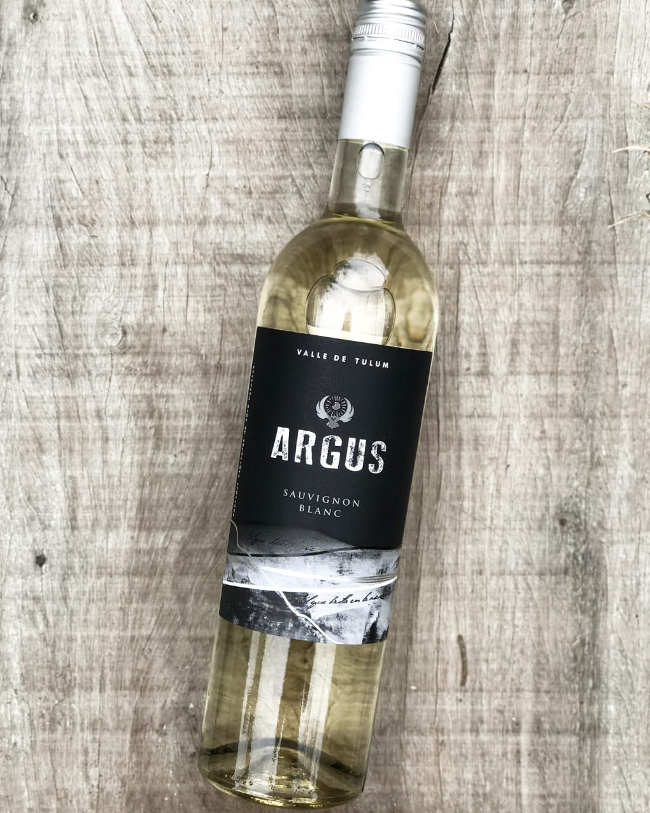
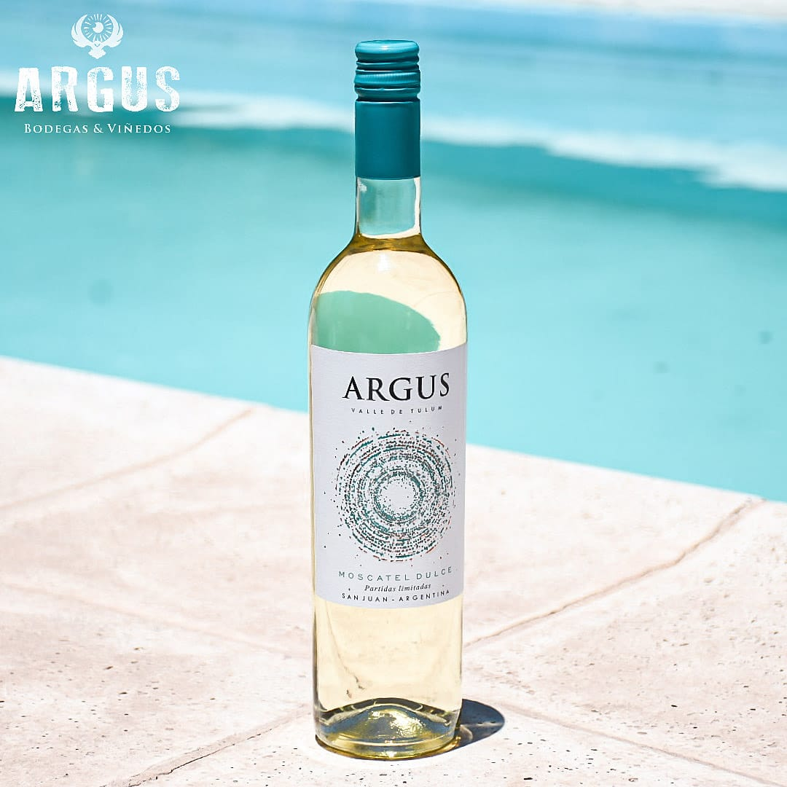
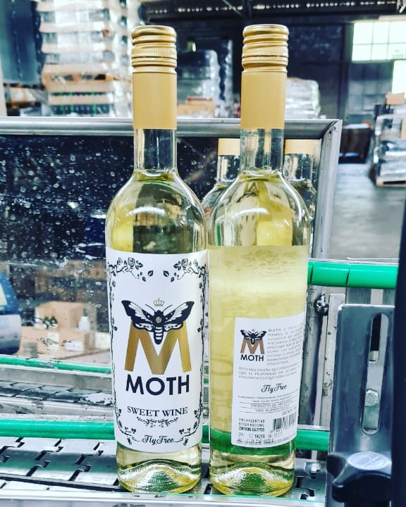
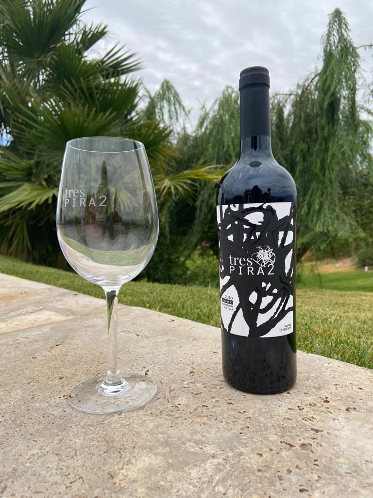
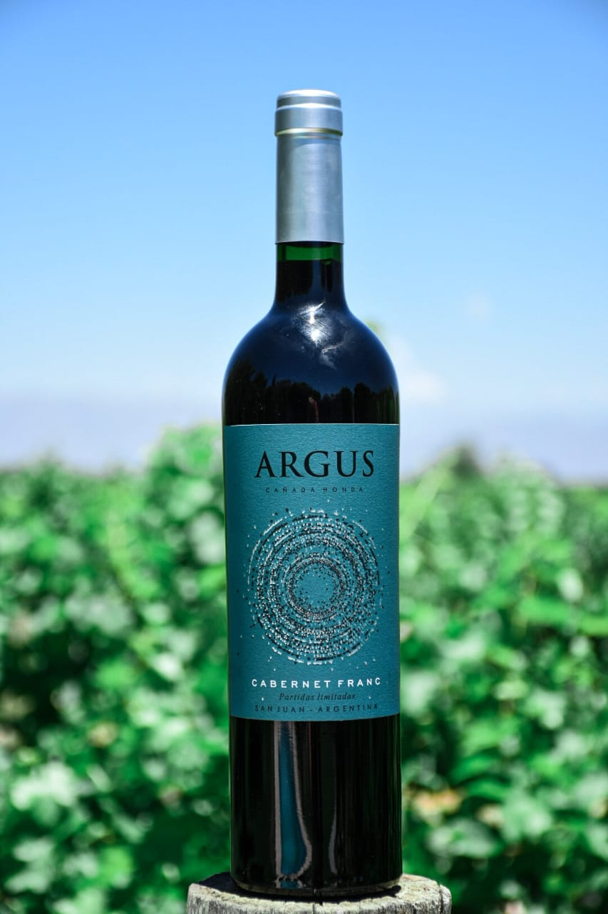
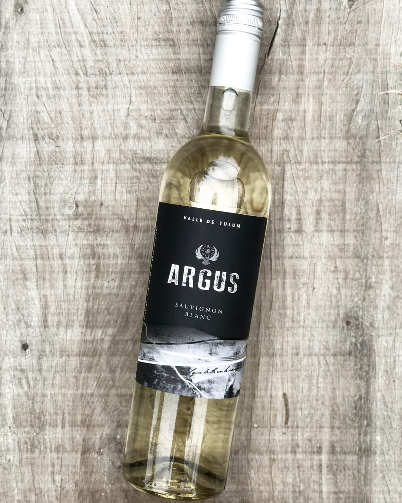
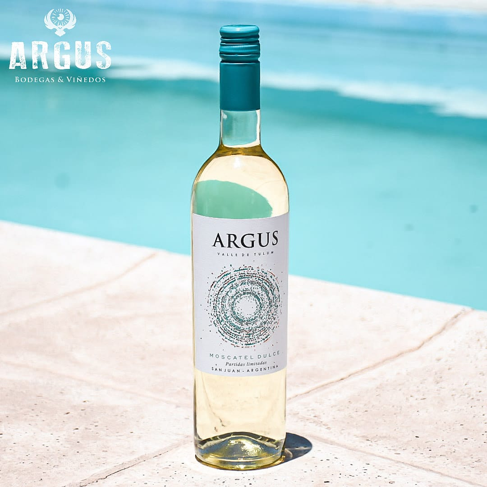
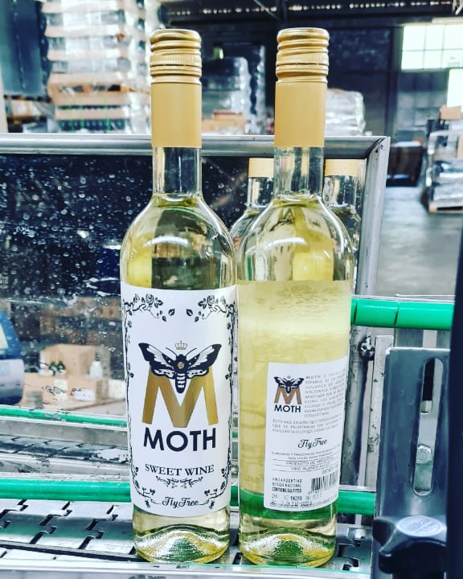
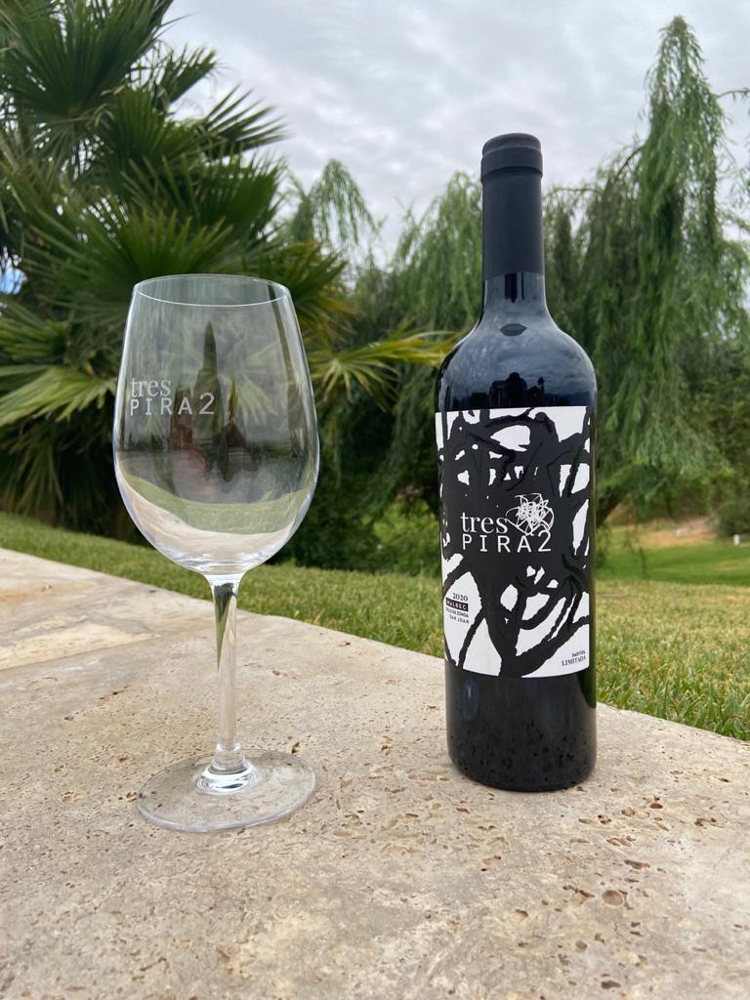
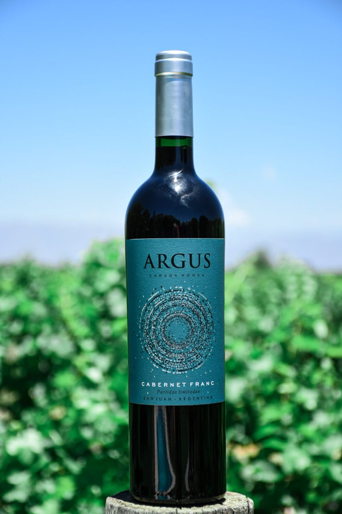

MaridarWine

Te ofrecemos los mejores vinos de autor y bodegas boutique para que disfrutes de un agradable momento con una copa de vino en la mano. Estaremos guiándote en este bello mundo presentandote los vinos de la mejor manera posible, te ofrecemos catas privadas y guiadas para que conozcas cada aspecto del vino que mejor se adecue a tus gustos.
Mariel indavera es quien te guiara en este maravilloso mundo del vino, ella es nuestra Sommelier certificada y sera quien te enseñe e indique el camino para poder disfrutar y saborear un vino para que puedas disfrutar por completo de la experiencia que se esconde dentro de cada botella.


Te ofrecemos la oportunidad de experimentar catas y degustaciones privadas de mano de nuestra Sommelier experta en vinos.
Las catas consisten en probar una serie de vinos elegidos por nuestra Sommelier luego de una entrevista con el organizador, segun sus gustos o preferencia se realiza la seleccion. El organizador puede tener hasta diez participantes presentes en la cata. Nuestra Sommelier les explicara sobre cada vino a catar, les brindara informacion sobre la bodega que elabora el vino, e indicara las caracteristicas principales de cada cepa que participe de la cata.


 








